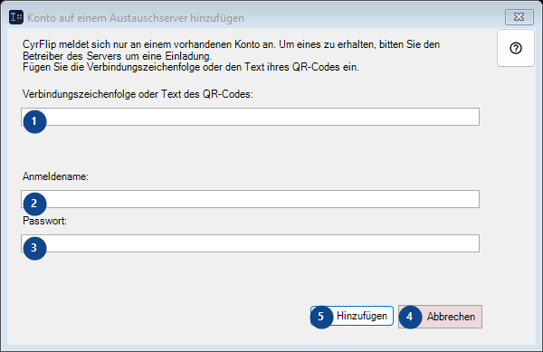
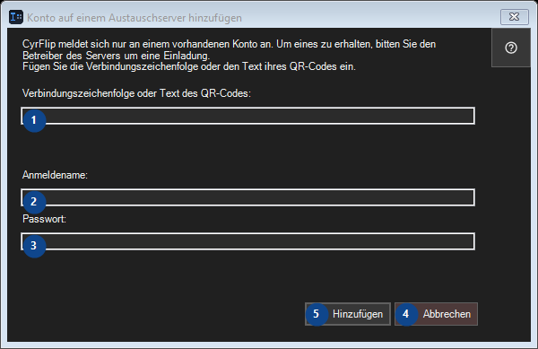

Konto auf einem Austauschserver hinzufügen
Zweck
Geben Sie Kopiertes über einen eigenen Austauschserver an Ihre anderen Geräte weiter.


Reihenfolge
Lesen Sie die nummerierten Erklärungen, wählen Sie die benötigten Werte und fahren Sie mit dem Fensterbefehl fort.
Elemente
1. CyrFlip meldet sich nur an einem vorhandenen Konto an. Um eines zu erhalten, bitten Sie den Betreiber des Servers um eine Einladung. Fügen Sie die Verbindungszeichenfolge oder den Text ihres QR-Codes ein.
Wählen Sie den Wert zur benachbarten Beschriftung oder geben Sie ihn ein. Prüfen Sie ihn vor dem Fortfahren.
Ihre Tastenkürzel2. CyrFlip meldet sich nur an einem vorhandenen Konto an. Um eines zu erhalten, bitten Sie den Betreiber des Servers um eine Einladung. Fügen Sie die Verbindungszeichenfolge oder den Text ihres QR-Codes ein.
Wählen Sie den Wert zur benachbarten Beschriftung oder geben Sie ihn ein. Prüfen Sie ihn vor dem Fortfahren.
Ihre Tastenkürzel3. CyrFlip meldet sich nur an einem vorhandenen Konto an. Um eines zu erhalten, bitten Sie den Betreiber des Servers um eine Einladung. Fügen Sie die Verbindungszeichenfolge oder den Text ihres QR-Codes ein.
Wählen Sie den Wert zur benachbarten Beschriftung oder geben Sie ihn ein. Prüfen Sie ihn vor dem Fortfahren.
Ihre Tastenkürzel4. Abbrechen
Nutzen Sie diesen Befehl für die genannte Aktion. Lesen Sie eine Bestätigung, bevor Sie zustimmen.
Ihre Tastenkürzel5. Hinzufügen
Nutzen Sie diesen Befehl für die genannte Aktion. Lesen Sie eine Bestätigung, bevor Sie zustimmen.
Ihre Tastenkürzel